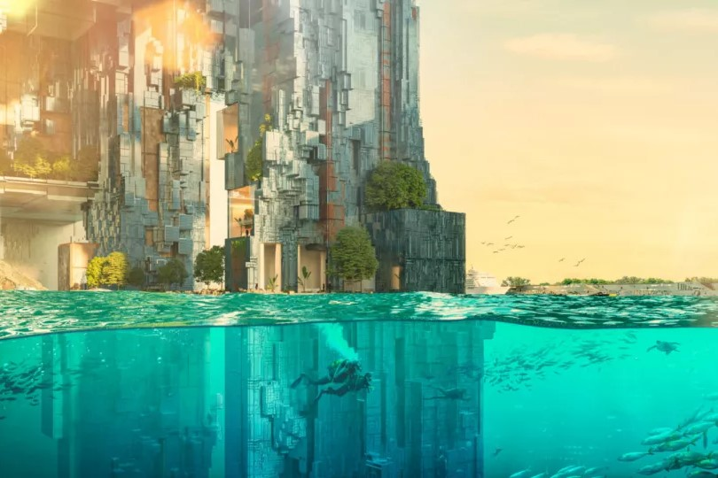
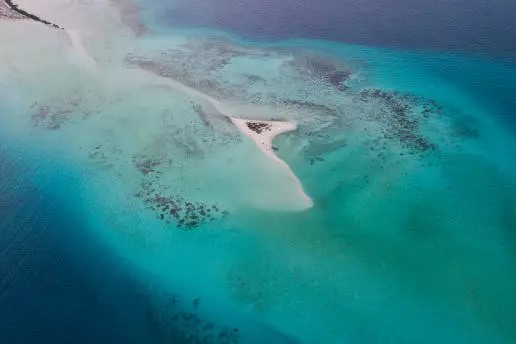
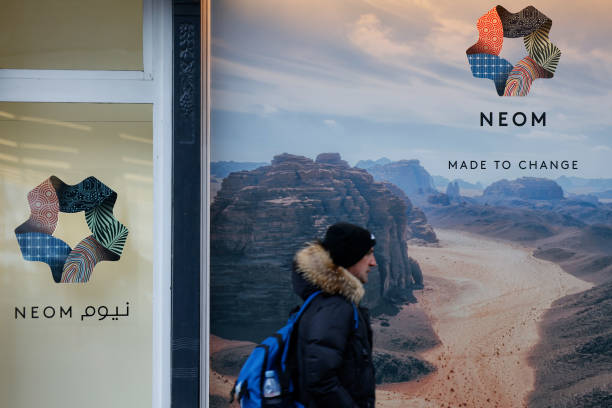
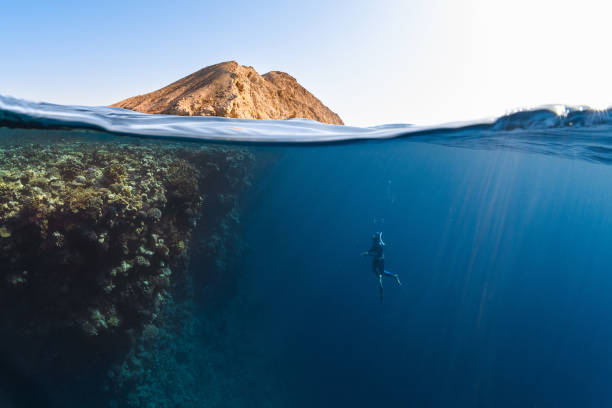

NEOM is a visionary project located in the northwestern region of Saudi Arabia. Aimed at redefining urban living, it is set to be a hub for innovation, sustainability, and cutting-edge technology.
What is NEOM?
NEOM is a $500 billion mega-project, part of Saudi Arabia’s Vision 2030, designed to drive economic diversification and global innovation, It will be powered entirely by renewable energy and will redefine city living with autonomous transport, smart cities, and zero-emission environments.

Key Features of NEOM
Sustainable Energy:
NEOM will be powered by 100% renewable energy sources, utilizing solar, wind, and hydroelectric
power. This commitment to sustainability aims to significantly reduce carbon
emissions and promote a cleaner environment.
Technology and Innovation:
NEOM will be a hub for cutting-edge innovations in artificial intelligence, robotics, and smart city
technologies, attracting startups and researchers to tackle future challenges.
The Line:
This 170-kilometer linear city will accommodate 9 million residents, emphasizing car-free living and
smart transportation to enhance urban life and environmental harmony.
Oxygen:
This floating industrial complex will prioritize green energy production. By implementing innovative
manufacturing techniques, it aims to contribute to a circular economy and support NEOM’s
sustainability initiatives.

Why NEOM Matters
Global Significance:
NEOM is poised to become a global magnet for talent and innovation. By attracting experts and
visionaries from various fields, it aims to drive sustainability efforts and set new standards for
urban development. The project is expected to showcase how cities can be designed for the future,
with a focus on environmental stewardship, community living, and technological integration.
Economic Impact:
As a cornerstone of Saudi Arabia's Vision 2030, NEOM is set to significantly boost the national
economy. The project will create thousands of jobs across various sectors, from construction and
technology to tourism and entertainment. This economic activity will not only enhance the quality of
life for residents but also open doors for innovation and entrepreneurship, making NEOM a vital
player in the global economy.

Future Goals
Completion by 2030:
NEOM is envisioned to revolutionize the way people live and work by creating an ecosystem that
prioritizes sustainability, innovation, and quality of life. The project aims to integrate smart
technologies throughout the city, fostering a seamless connection between residents and their
environment. By 2030, NEOM will set a new benchmark for urban living, showcasing how modern cities
can operate in harmony with nature while providing advanced amenities and services.
Community Engagement:
NEOM's future goals include fostering a strong sense of community among its residents. This will be
achieved through the establishment of public spaces, cultural initiatives, and community programs
that encourage interaction and collaboration. By prioritizing social cohesion, NEOM aims to create a
vibrant and inclusive atmosphere where diverse populations can thrive together.

Join the Journey
Be a part of NEOM’s future:
As NEOM embarks on its transformative journey, you have the opportunity to engage with this
groundbreaking project. Learn about its ambitious goals and innovative projects that aim to redefine
urban living. NEOM is not just about transforming Saudi Arabia; it seeks to leave a lasting impact
on the world. By showcasing sustainable practices, cutting-edge technology, and a commitment to
quality of life, NEOM aims to inspire cities globally.
Explore Opportunities:
Whether you are an investor, a professional, or a curious mind, NEOM offers numerous opportunities
to be involved. From partnerships in technology development to participation in community
initiatives, there are many ways to contribute to this visionary project. Explore the potential to
collaborate and innovate within a framework that prioritizes sustainability and progress.